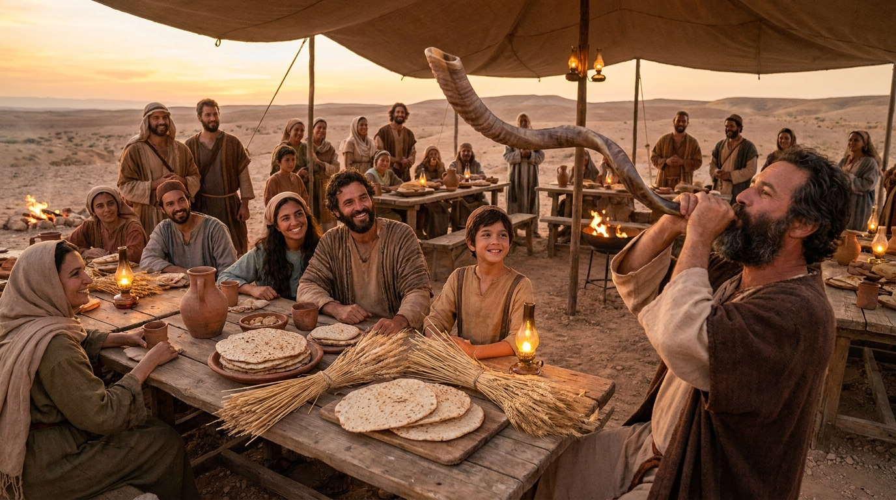
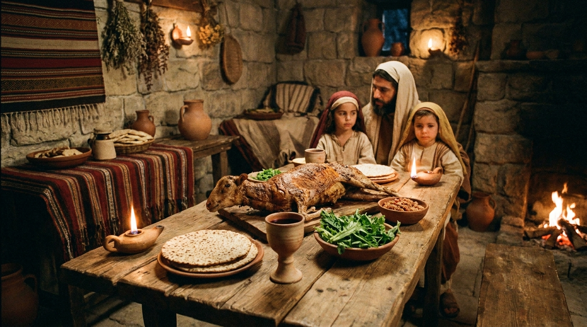
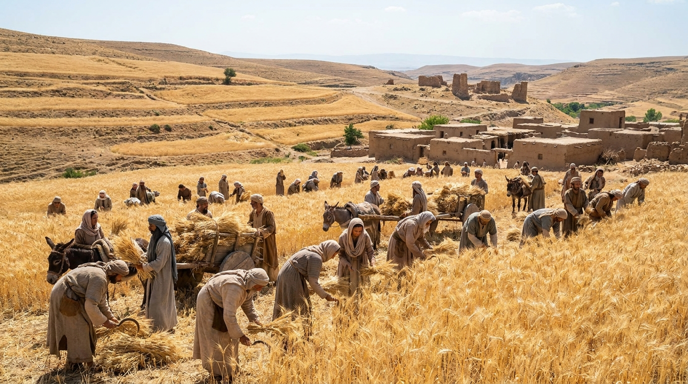
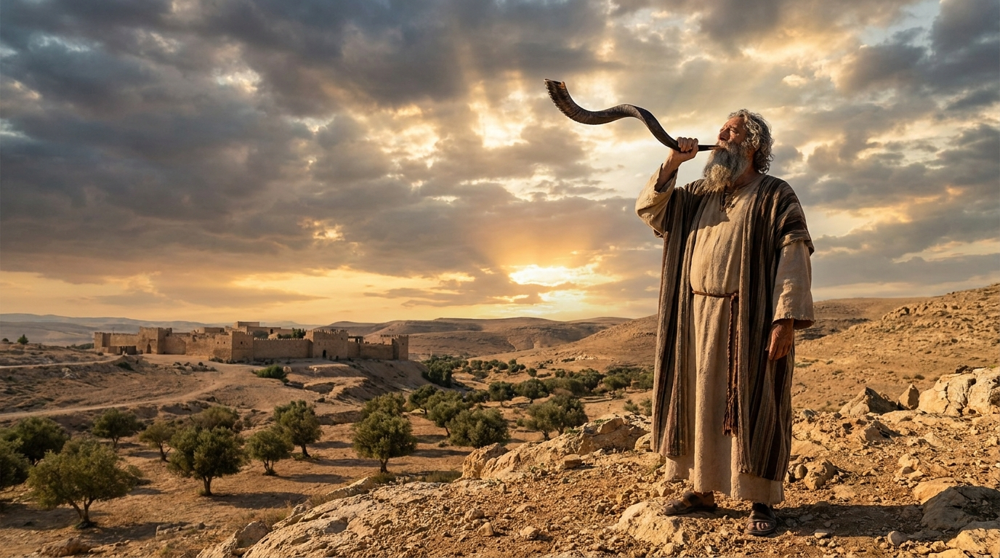
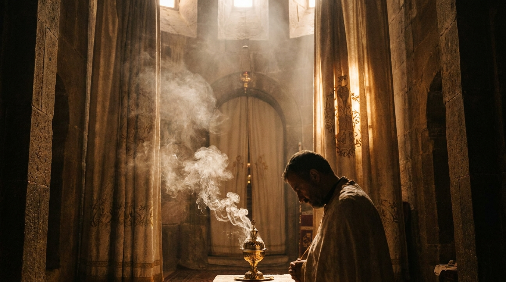
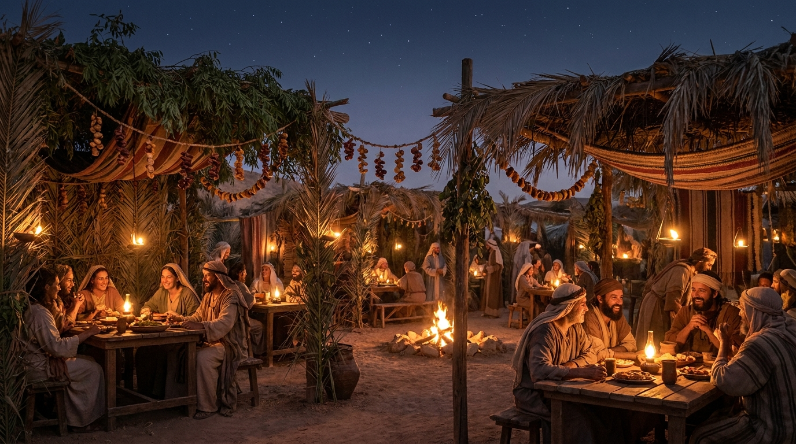

O Calendário de Deus
As festas instituídas por Deus no Antigo Testamento (encontradas principalmente em Levítico 23) não eram apenas feriados nacionais. Elas eram "ensaios proféticos". Cada festa celebrava um evento histórico da salvação de Israel, mas também apontava profeticamente para o futuro, revelando o plano de redenção através do Messias.
Neste estudo:
🍞 Páscoa e Pães Asmos (Pesach)

A Páscoa celebrava a libertação dos israelitas da escravidão no Egito, quando o sangue do cordeiro nos umbrais das portas salvou os primogênitos do juízo. Logo em seguida, vinha a Festa dos Pães Asmos (sem fermento). Profeticamente, Jesus é o "Cordeiro de Deus", crucificado exatamente no dia da Páscoa, cujo sangue nos livra do juízo do pecado (representado pelo fermento).
🌾 Primícias e Pentecostes (Shavuot)

A festa das Primícias celebrava os primeiros frutos da colheita (Jesus ressuscitou exatamente no dia das Primícias!). Cinquenta dias depois vinha o Pentecostes (Festa das Semanas), que celebrava a grande colheita de trigo e a entrega da Lei no Monte Sinai. No Novo Testamento, foi no exato dia de Pentecostes que o Espírito Santo foi derramado, iniciando a "colheita" da Igreja.
🎺 Festa das Trombetas (Rosh Hashaná)

Celebrada no outono, marcava o início do ano civil judaico. O som do Shofar (trombeta de chifre de carneiro) servia como um chamado ao arrependimento e um alerta. Profeticamente, muitos estudiosos associam esta festa ao futuro arrebatamento da Igreja e à Segunda Vinda de Cristo, que será acompanhada pelo "toque da última trombeta".
🩸 Dia da Expiação (Yom Kippur)

Este era o dia mais sagrado e solene do ano. Era o único dia em que o Sumo Sacerdote entrava no Santo dos Santos para aspergir o sangue do sacrifício e cobrir os pecados de toda a nação. Aponta diretamente para o sacrifício definitivo de Cristo, o nosso grande Sumo Sacerdote, que entrou no santuário celestial para perdoar eternamente os nossos pecados.
⛺ Festa dos Tabernáculos (Sukkot)

A última festa do ano era uma celebração de grande alegria. O povo vivia em cabanas (tendas) feitas de ramos por sete dias, lembrando como Deus sustentou Israel no deserto. Profeticamente, ela aponta para o futuro glorioso em que Deus voltará a "tabernacular" (habitar) definitivamente com os homens no Novo Céu e Nova Terra.
✅ Resumo
Estudar as Festas Bíblicas é ver o projeto de salvação de Deus desenhado de forma magistral. As festas da primavera se cumpriram perfeitamente na primeira vinda de Cristo (morte, ressurreição e a vinda do Espírito). As festas do outono apontam para o que ainda está por vir: o seu retorno triunfal e o juízo final!
🎥 Aprofunde seu estudo
Deseja conhecer mais sobre as Festas Bíblicas e seu significado profético?
▶ Ver no YouTubeContinue sua jornada:
- Próximo Tema ➡️ Linha do Tempo
- Anterior 📖 Cultura Judaica
Apoie este projeto 🌱
Se este estudo foi útil, considere apoiar a manutenção do site.
Chave PIX (Celular):
marcosmontanari2@gmail.com